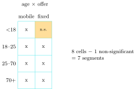

Definition
Four steps of customer-driven strategy (STP + mix):
- Segmentation — divide the market into distinct groups of buyers with different needs, characteristics and behaviour requiring tailored products and programmes;
- Targeting — evaluate each segment's attractiveness and select the targets;
- Positioning — make the product occupy a clear, distinctive, desirable place in consumers' minds relative to competitors;
- Marketing mix — set product, price, place, promotion.
A segment is homogeneous inside and heterogeneous outside: its consumers share the same demand.
Model
A trade-off between two extremes
| Mass marketing | Segmentation | One-to-one |
|---|---|---|
| all customers similar | groups with similar needs, | each customer is a |
| uses and expectations | "market" | |
| one product, one plan | ad hoc products per group | unique product per |
| customer | ||
| Ford Model T | Coca-Cola family of cans | tailor-made suit |
Costs of segmenting: higher development, production, distribution and stock costs; redundant structures; fewer economies of scale. Mitigation: standardization and modularization (IKEA).
Requirements of a good segment
Measurable (size, purchasing power); accessible (cost to reach and serve); homogeneous/heterogeneous (conceptually distinct); important (enough profit to justify action); durable (exploitable for some time).
Segmentation bases (B2C)
| Macro characteristic | Type | Example variables |
|---|---|---|
| Customer features | Socio-demographic | age, sex, occupation, ethnicity |
| Geographic | continent, country, region, urban/rural | |
| Psychographic | personality, lifestyle, opinions | |
| Customer behaviour | Buying habits | frequency, store vs e-commerce |
| Product use | habitual or not, type of use | |
| Customer needs | Benefits | price, quality, safety, convenience |
Example: Champion segments sportswear into "Fit and Polish", "Serious Sport Competitor", "Value-seeking mums".
Methods
- Mathematical: data collection → clustering → segment description (needs a representative sample).
- Heuristic: successive eliminations (Porter 1987); two-stage approach (Wind and Cardozo 1974): macro-segmentation on external features and buying situation (demographic, operational) then micro-segmentation on individual, behavioural features; nested approach (Bonoma and Shapiro 1982): from outer demographic variables to operating variables, buying process, situational factors, personal factors — the closer to the centre, the harder the data.
Successive eliminations
Heuristic, qualitative, iterative, unordered choice of bases. (1) pick the most significant variables from a check-list; (2) explore new ones; (3) cross variables in pairs in matrices and eliminate the non-significant crossings.
Three marketing options
| Option | Plan | Example | Business strategy |
|---|---|---|---|
| Undifferentiated | one plan, whole market | classic Coca-Cola | cost leadership |
| Differentiated | one plan per segment | Vodafone, telcos | differentiation |
| Concentrated | one plan, one segment | MRP software for | focus |
| textile firms |
In B2B a single large customer can be a segment. Segmenting means choosing the competitive system: not easily reversible, strong impact on competition.
Worked example
Telephone company — variables: age (<18, 18–25, 25–70, 70+), offer (mobile, fixed), contract (voice, internet), customer (private, business/VAT).
- Age × offer: 8 cells; "<18 with fixed line" not significant → 7 segments.
- (Age-offer) × contract: 14 cells; "18–25 fixed voice" and "70+ fixed internet" dropped → 12.
- Merging 18–70 and crossing with customer type: 14 cells, 4 dropped (business customers aged 70+ or under 18) → 10 potential segments.
Selected targets:
| Segment | Age | Network | Customer | Contract |
|---|---|---|---|---|
| 1 | any | mobile | business/VAT | voice and internet |
| 2 | any | fixed | business/VAT | voice and internet |
| 3 | under 25 | mobile | private | voice and internet |
| 4 | over 70 | fixed | private | voice |
Then each target gets its positioning and 4P; a segments × competitors grid shows who serves which segment.
Pitfall
Segmentation divides the market; targeting chooses within it. A segment that is not accessible or not durable is useless even if homogeneous.
Recall
List the five segment requirements and the bases table; run the telephone example from 8 to 10 segments; match the three options to Porter's strategies.
Picture

Each crossing step removes the combinations that make no business sense.